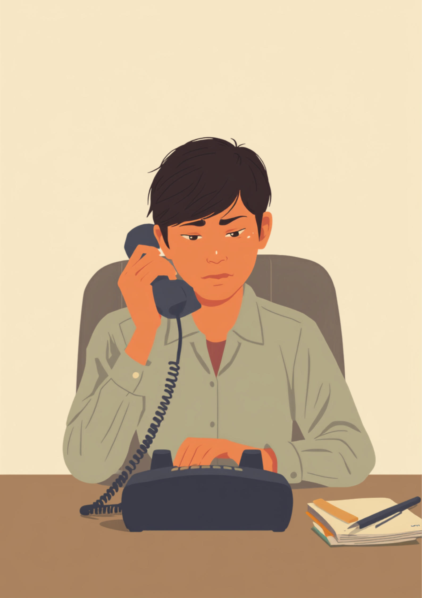
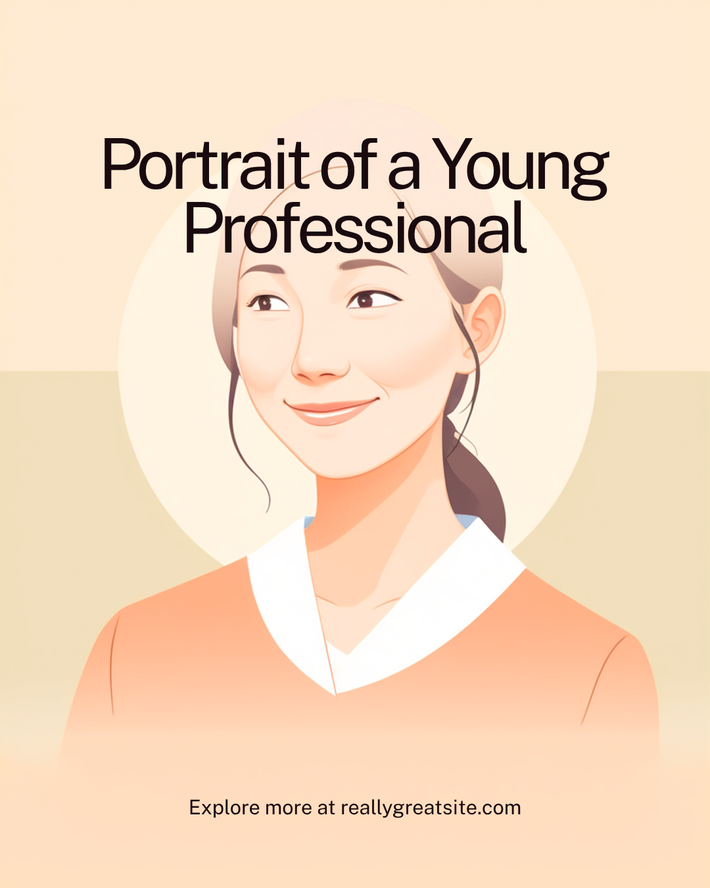

社交不安障害（社会不安障害）があると、電話が鳴る、会議で名前を呼ばれる、雑談の輪に入る、といった何気ない場面で、動悸や震え、頭が真っ白になる感覚に襲われることがあります。周りからは「緊張しいなだけ」「そのうち慣れる」と見られがちですが、本人にとっては毎日が小さな緊張の連続だったりします。この記事では、社交不安障害のある方が職場で感じやすいしんどさと、職場への伝え方、使える制度を当事者の声をもとに整理しました（2026年7月時点の情報です）。
PR



電話が鳴った瞬間、頭の中が真っ白になる
「話しかけられただけで頭が真っ白になる」その瞬間に何が起きているか
社交不安障害は、単なる「人見知り」や「あがり症」とは違って、特定の社会的場面で強い恐怖や不安が続き、日常生活や仕事に支障が出ている状態を指すとされています。本人の性格や努力不足の問題ではないんです。ミミ
就労支援の現場で関わってきた中で、社交不安障害のある方から繰り返し聞いてきた言葉があります。「そんなに緊張することじゃないのに、って自分でも分かってるんです」というものです。社交不安障害があると、電話が鳴る、名前を呼ばれる、視線を感じる、といった場面で、動悸や発汗、声の震え、頭が真っ白になる感覚が起きることがあります。頭では「大したことじゃない」と分かっていても、体のほうが先に反応してしまう、という感覚に近いようです。
厄介なのは、こうした反応が「不合理だ」と本人が一番よく分かっている、という点です。分かっているのに止められない。だからこそ「なんでこんなことで」と自分を責めてしまい、さらに不安が強くなる、という悪循環に陥りやすいとされています。
!
社交不安障害の症状の現れ方や程度には個人差があります。この記事で挙げる内容がそのまま当てはまるとは限らないため、気になる症状がある場合は自己判断せず精神科・心療内科に相談することをお勧めします。
「電話が鳴った瞬間、周りが『誰か出て』ってオーラを出してるのが分かるのに、体が固まって受話器に手が伸びないんです。3秒くらい固まって、結局隣の先輩が出てくれる。それが1日に2、3回あると、もう自分がその場にいるだけで迷惑なんじゃないかって、帰り道でずっと考えちゃいます。」
20代・女性（社交不安障害・接客業からIT事務へ転職）
相談の一コマ

相談者
会議で「じゃあ次、〇〇さんどう思う？」って急に振られると、頭が真っ白になって何も言葉が出てこないんです。あとで「あの時ちゃんと考えを言えばよかった」って何日も引きずります。

ミミ
急に振られると準備の時間がなくて、余計に不安が強くなりやすいんです。まずは「その場ですぐ答えられなくても大丈夫」と自分に許可を出すところから始めてみませんか。
相談者
でも「考えます」だけだと、やる気がないと思われそうで怖いです…。
ミミ
「少し整理してからメールで送っていいですか」のように、代わりの手段を添えて伝える方法があります。次の章で、場面ごとの具体的な工夫を一緒に見ていきましょう。
電話・会議・雑談、場面によって不安の強さが変わる理由
社交不安障害と一口に言っても、不安の強さは場面によってかなり違うことが多いようです。「電話は平気だけど、複数人の前で話すのはだめ」という方もいれば、「1対1の雑談が一番怖い」という方もいます。共通しているのは、「見られている」「評価されている」と感じる度合いが強いほど、不安も強くなりやすいという点です。
i
不安の感じ方や、どの場面で症状が強く出るかには個人差があります。同じ社交不安障害という診断名でも、実際にどこまでの場面が負担になるかは人によって異なるとされています。
もうひとつ見落とされがちなのが、「不安を感じている自分をどう見られているか」への不安です。声が震えていることに気づかれたくない、手が震えているのを見られたくない、という「不安についての不安」が、さらに症状を強めてしまうことがあるとされています。
「正直言うと、飲み会の誘いを断り続けて2年くらい経ちます。行かない理由を毎回考えるのも疲れて、最近は『予定があって』としか言わなくなりました。でも本当は、大人数の中で何を話せばいいか分からなくて、輪に入れずに黙ってスマホをいじってる自分を見られるのが一番嫌なんです。断ってばかりで、感じ悪い奴だと思われてるだろうなとは思います。」
30代・男性（社交不安障害・営業職）
職場にどう伝える、「気にしすぎ」と言われすぎない伝え方
社交不安障害の伝えづらさは、目に見える障害と違って「気の持ちようでは」と受け取られやすい点にあります。「みんな緊張はするものだから」と一般化されてしまうと、本人が感じている強さのギャップを説明するのがさらに難しくなります。かといって細かく症状を説明しようとすると、今度は「そこまで大変だとは思わなかった」と腫れ物扱いされてしまうこともあり、ちょうどいい伝え方を見つけるのは簡単ではありません。
症状ではなく「助かる対応」を伝えるという考え方
診断名や不安のメカニズムを詳しく説明する必要はないとされています。業務に関わる具体的な場面で、何をしてもらえると助かるかに絞って伝える方法が、双方にとって負担が少ないようです。
- 「電話は取り次ぎだけ担当させてもらえると助かります」
- 「会議で急に意見を求められると難しいので、事前に議題を共有してもらえますか」
- 「飲み会や雑談は、途中で抜けても気にしないでもらえると嬉しいです」
- 「緊張して声が小さくなることがありますが、体調が悪いわけではありません」
一度にすべての場面を伝える必要はありません。まずは一番負担の大きい場面をひとつだけ選んで、「こうしてもらえると助かる」を伝えてみる。それだけでも、日々の緊張の総量は変わることがあります。ミミ
信頼できる上司や人事担当者に、業務に関わる範囲でまず共有し、そこから必要な分だけチームに広げてもらう、という進め方をとっている方もいるようです。誰にどこまで伝えるかは、本人が選んでいい範囲だと考えてよいとされています。
「上司に伝えたとき、最初は『そんなの気にしすぎだよ、俺も新人の頃は緊張したし』って流されました。めちゃくちゃ悔しくて、その日は何も言えずに終わったんですけど、1ヶ月後に思い切って『電話が鳴ると本当に体が固まってしまう。取り次ぎだけでも代わってもらえると助かる』ってもう一度伝えたら、意外とあっさり配置を変えてくれました。最初からもっと具体的に言えばよかったと今は思ってます。」
40代・女性（社交不安障害・パート事務）
使える制度と、一人で抱えないための相談先
精神障害者保健福祉手帳という選択肢
社交不安障害は、精神障害者保健福祉手帳の対象になり得ますが、診断名だけでなく、日常生活や就労にどの程度支障が出ているかによって判断されます。取得の可否や等級については、主治医や自治体の障害福祉窓口に確認するのが確実です（2026年7月時点の情報です）。手帳を取得すると、障害者雇用枠での就職や、企業側の合理的配慮を前提にした働き方を選びやすくなる場合があります。
相談できる窓口
- 精神科・心療内科（症状の記録や、認知行動療法・薬物療法の相談）
- 職場に選任されている産業医（50人以上の事業場に選任義務あり）
- 自治体の障害福祉窓口、精神障害者保健福祉手帳の相談窓口
- 就労移行支援事業所（場面ごとの対処法や、職場との調整の練習）
社交不安障害の症状の現れ方や、必要な配慮の内容には個人差があります。この記事の内容がそのまま当てはまるとは限らないため、実際の判断は主治医・支援者・自治体の窓口とよく相談しながら進めることをお勧めします（2026年7月時点の情報です）。
頭が真っ白になる自分を責め続けなくても大丈夫です。場面を1つに絞って「助かる対応」を伝えることは、決してわがままなことではありません。
よくある質問
Q. 社交不安障害でも障害者手帳は取れますか？
社交不安障害は精神障害者保健福祉手帳の対象になり得ますが、診断名だけでなく日常生活や就労への支障の程度によって判断されます。等級や取得の可否は主治医や自治体の窓口にご確認ください（2026年7月時点の情報です）。
Q. 電話対応がどうしても無理なとき、断ってもいいのでしょうか？
すべての電話対応を一律に免除してもらうのは難しい場合もありますが、業務内容や配置を調整してもらう相談自体は合理的配慮の一環として認められています。まずは信頼できる上司や産業医に、具体的にどこまでなら対応できるかを伝えるところから始める方法があります。
Q. 社交不安障害は治りますか？
症状の経過には個人差があり、断言できるものではありません。認知行動療法や薬物療法によって症状が軽くなったという声がある一方、波がありながら付き合っていく方もいます。気になる症状がある場合は精神科・心療内科への相談をおすすめします。
Q. 転職するとき、社交不安障害はどこまで伝えるべきですか？
すべてを開示する義務はありません。障害者雇用枠を使う場合は配慮を受けやすくなる一方、一般雇用枠であれば伝えない選択をする方もいます。どちらが合うかは本人の状況次第なので、就労移行支援機関などに相談しながら決めることもできます。
Q. 家族や友人にどう説明すればいいですか？
「わがまま」や「性格の問題」ではなく、特定の場面で強い不安が生じる状態であることを、できれば具体的なエピソードとあわせて伝える方法があります。うまく言葉にできないときは、この記事のような資料を見せながら話すという方法もあります。
この5点を頭に置いておくだけで、少し気持ちが軽くなるかもしれません
PR


一人で抱え込む前に、今の気持ちを話してみませんか
「まだ迷っている」段階でも大丈夫です。mimemimeの無料相談は、今の状況の整理から一緒に始められます。
無料で話してみる
おのざる
mimemime代表。就労支援の現場経験をもとに、障がいのある方の働く不安に寄り添う記事を執筆。